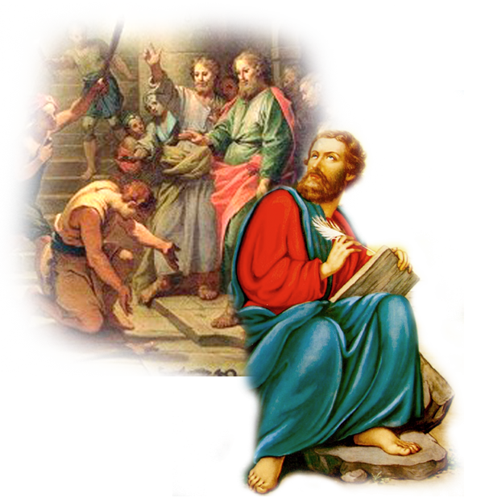

João 3:16
Porque Deus amou o mundo de tal maneira que deu o seu Filho unigênito, para que todo aquele que nele crê não pereça, mas tenha a vida eterna.
/skds-ministries/images/image-ID-5c41279c-ed4b-45ae-9a0c-0d18d4eb7cc5.png)
Romanos 8:28
E sabemos que todas as coisas contribuem juntamente para o bem daqueles que amam a Deus, daqueles que são chamados segundo o seu propósito.

Filipenses 4:13
Posso todas as coisas naquele que me fortalece.